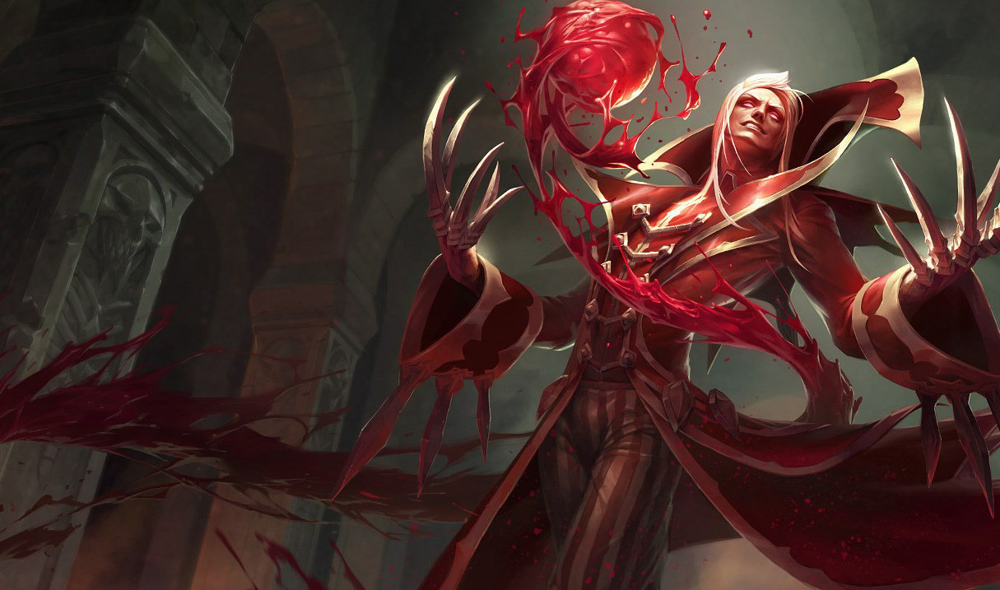

Vladimir

Vladimir Демон с жажда за смъртна кръв, Владимир е повлиял на делата на Noxus от най-ранните дни на империята.
В допълнение към неестественото удължаване на живота му, неговото майсторство на хемомантията му позволява да контролира умовете и
телата на другите толкова лесно, колкото и собствените си. В пищните салони на ноксианската аристокрация това му позволява да изгради
фанатичен култ към личността около себе си -
докато в най-долните улички му позволява да обезкърви враговете си.
Zed

Zed Напълно безмилостен и безмилостен, Зед е лидер на Ордена на Сянката, организация,
която той е създал с намерението да милитаризира магическите и бойни традиции на Йония, за да прогони нашествениците от Ноксиан.
По време на войната отчаянието го кара да отключи тайната форма на сянка - магия на злонамерен дух, толкова опасна и покваряваща, колкото и мощна.
Зед е усвоил всички тези забранени техники, за да унищожи всичко, което смята за заплаха за нацията си или новия си ред..
Katarina

Katarina Решителна в преценката и смъртоносна в битка, Катарина е ноксиански убиец от най-висок калибър.
Най-голямата дъщеря на легендарния генерал Дю Куто, тя разкри таланта си с бързи убийства срещу нищо неподозиращи врагове.
Нейната огнена амбиция я е карала да преследва строго охранявани цели, дори с риск да застраши съюзниците си – но независимо от мисията,
Катарина няма да се поколебае да изпълни дълга си сред вихрушка от назъбени кинжали.